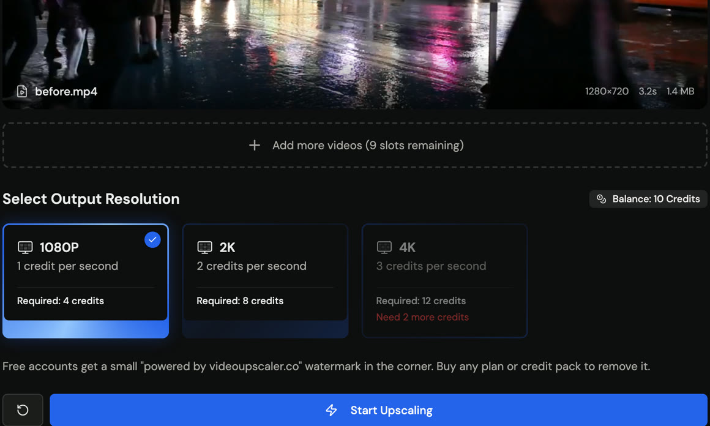

Automating Video Upscaling With a REST API: Submit, Poll, Download

Once you need to upscale more than a handful of videos, clicking through a web form stops being reasonable. Media libraries, course platforms and archive projects all end up writing a small script instead. Video processing APIs almost all follow the same asynchronous shape, so once you have built one integration the next is easy. This article walks through that shape and the details that trip people up.
The asynchronous pattern
Upscaling a minute of video takes longer than an HTTP request should stay open, so the API does not return the result directly. Instead:
- Submit. You send the input (a public video URL, or a file you uploaded first) and the options, such as the target resolution. The API answers immediately with a task object and an ID.
- Poll. You fetch the task by ID every few seconds until its status changes from processing to completed or failed.
- Download. The completed task includes an output URL. You fetch the file and store it wherever your system keeps media.
The VideoUpscaler API is a textbook example: POST /api/v1/upscale with a video_url and a resolution of 1080p, 2k or 4k, then GET /api/v1/tasks/{id} until it is done. The docs recommend polling every 5 to 10 seconds, which is a good default for any service of this kind: frequent enough that you are not waiting on a finished job, rare enough that you are not hammering the endpoint.
Idempotency keys are not optional
Networks fail. If your submit request times out, you do not know whether the job was created. Resubmitting blindly can create two jobs and, on a metered service, charge twice. The fix is an idempotency key: a unique string you choose per logical job (for example the media ID in your database) and send in a header. If the server has already seen that key, it returns the existing task instead of creating another. Build your retry loop around the key from day one; retrofitting it after an unexpected bill is the painful way to learn this.
Credits, authentication and limits
Most video APIs meter by duration. VideoUpscaler charges per second of input video at the same rates as its web app (1 credit at 1080P, 2 at 2K, 3 at 4K) and refunds the charge if a job fails. The API is available to accounts that have bought credits or subscribed; free accounts receive a 403 with a paid_plan_required code, so budget for a credit pack before you wire anything into production. Authentication is a bearer API key created in account settings and shown once, which means it belongs in a secrets manager or environment variable, never in a repository.
Before you depend on an API in a pipeline, read its limits page for input formats and size caps and make sure your upload step enforces the same limits. Rejecting an oversized file locally is cheaper than discovering it from a 4xx response after the upload.
Handling the failure cases
- Submit fails with a client error. Log the body, do not retry; the input is wrong.
- Submit times out. Retry with the same idempotency key.
- Task reaches failed. Record the error, mark the media for review, and do not loop. Most failures are unreadable files or unsupported codecs.
- Polling never completes. Set a ceiling (for example 30 minutes for a 10-minute clip) and alert rather than polling forever.
Skip the script entirely with MCP
If the people who need upscaling already work in an AI assistant such as Claude or Cursor, there is a shortcut that avoids writing any code. The Model Context Protocol lets an assistant call tools exposed by a server, and VideoUpscaler publishes an MCP server that wraps the same API: connect it, sign in, and ask the assistant to upscale a video URL. The assistant performs the submit, poll and download steps on your behalf, using the same credits. For one-off jobs by non-developers this is often the better fit, and the REST API remains the right tool for anything scheduled or high-volume.
Minimal integration checklist
| Item | Why |
|---|---|
| Idempotency key per job | Safe retries, no double charges |
| Poll interval 5–10 s with a ceiling | Responsive without hammering |
| Local validation of size and format | Fail fast before upload |
| Key in environment, not code | Keys are shown once and cannot be recovered |
| Store output URL and task ID | Auditable, re-downloadable |